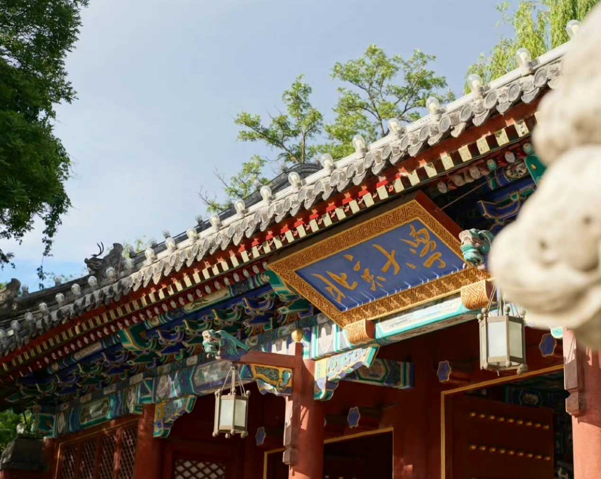
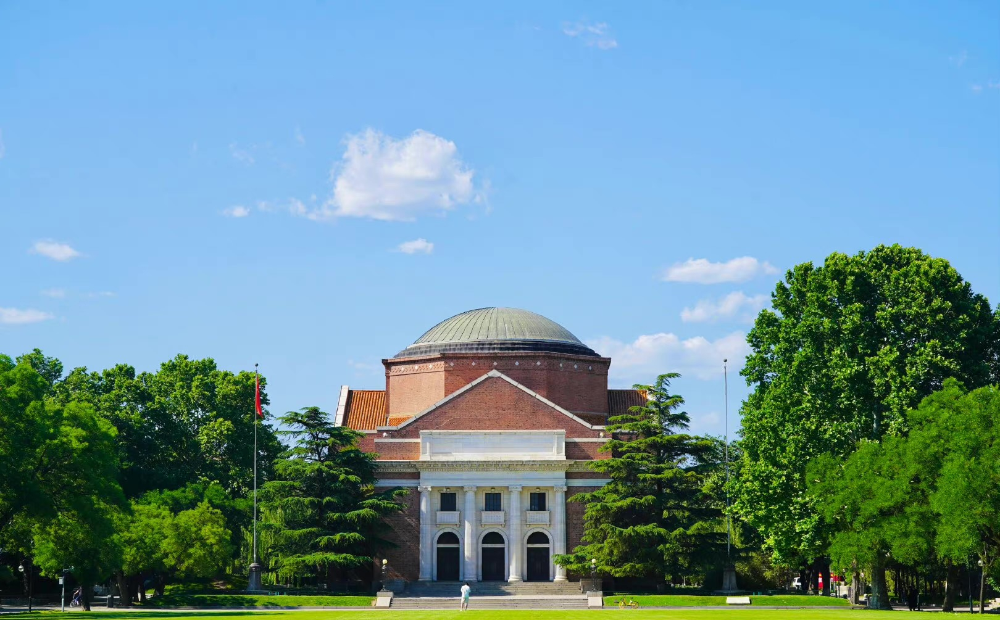
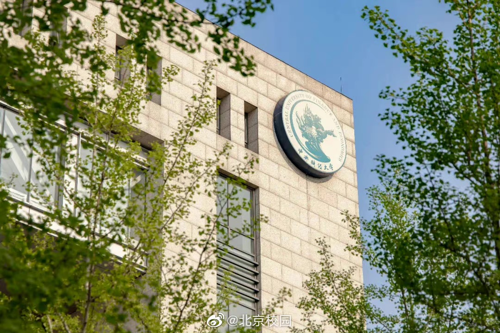
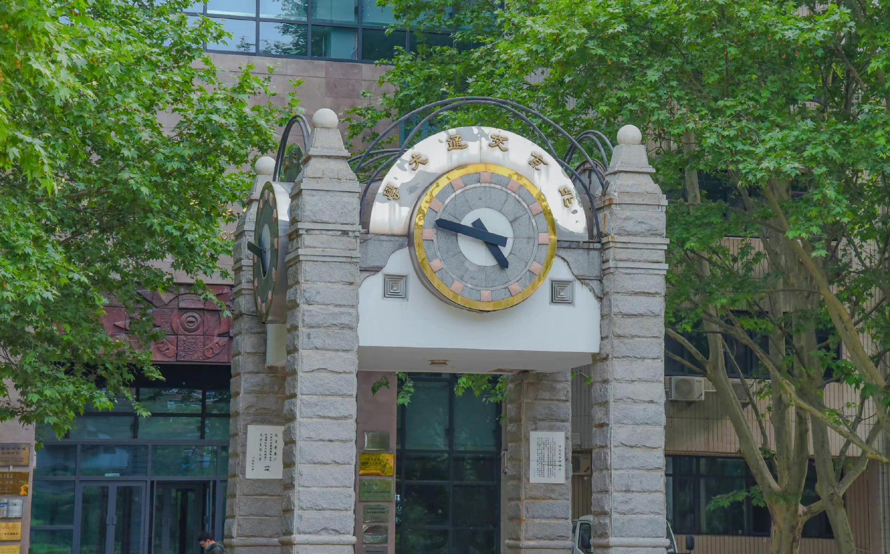
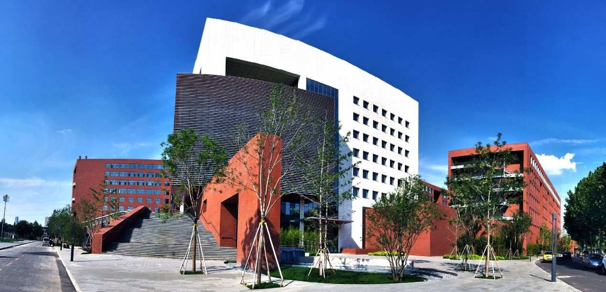
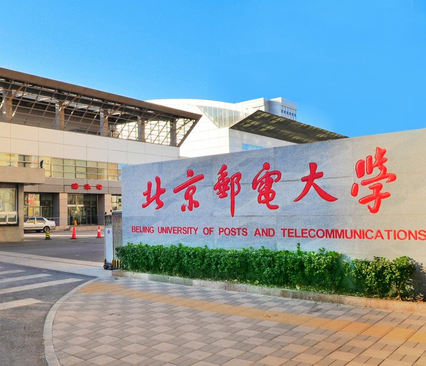
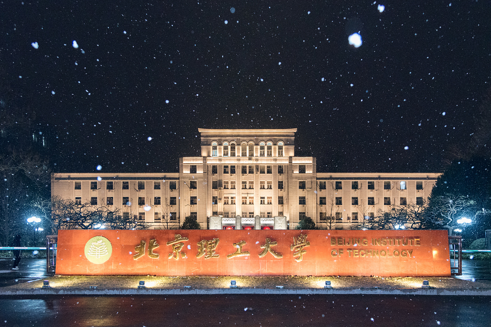
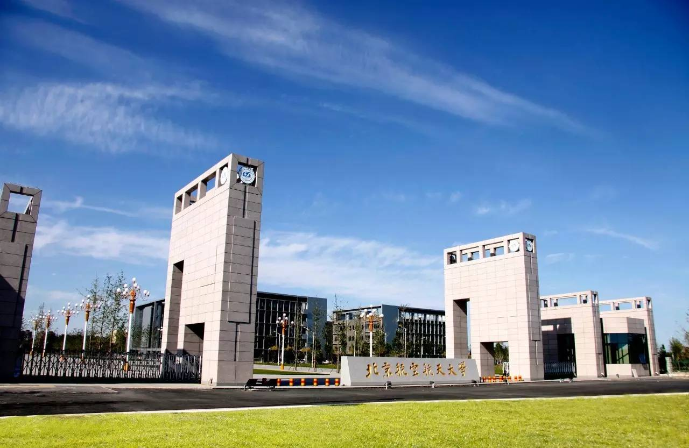
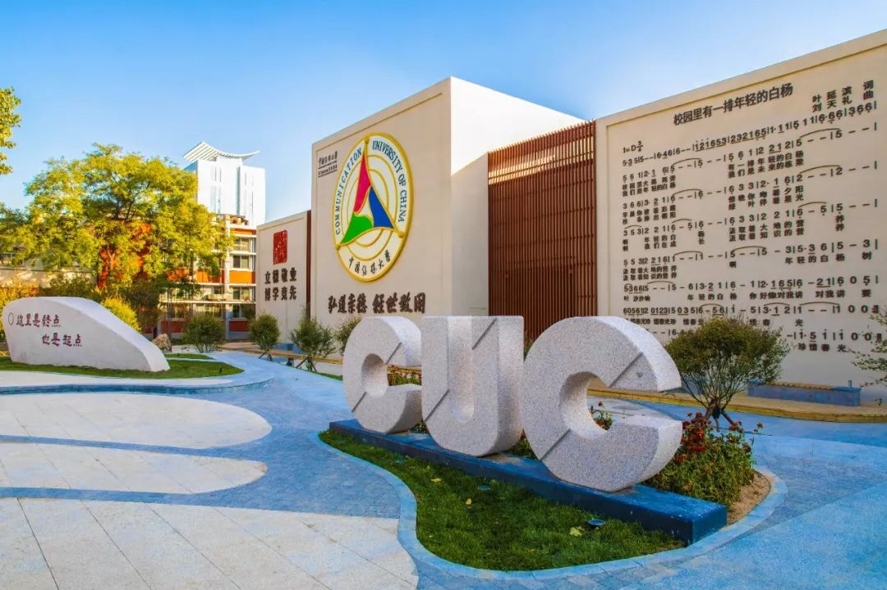

<!DOCTYPE html>
<html lang="zh-CN">
<head>
    <meta charset="utf-8">
    <title>北京名校绿色骑行</title>
    <meta http-equiv="Content-Type" content="text/html; charset=utf-8">
    <meta name="viewport" content="initial-scale=1.0, user-scalable=no">
    <meta http-equiv="X-UA-Compatible" content="IE=Edge">
    <style type="text/css">
    body,html,#container {
        overflow: hidden;
        width: 100%;
        height: 100%;
        margin: 0;
        font-family: "微软雅黑";
    }
    </style>
    <script type="text/javascript" src="http://api.map.baidu.com/api?v=1.0&type=webgl&ak=SZoF6NKAl8Eb8o1WYCort9E0yQ5oEEHv"></script>
</head>
<body>
    <div id="container"></div>
<script type="text/javascript">
var map = new BMapGL.Map('container');
var point = new BMapGL.Point(116.443, 39.935);
map.centerAndZoom(point, 15);
map.enableScrollWheelZoom(true);
map.setHeading(64.5);
map.setTilt(73);

//北大至清华骑行路线
var riding = new BMapGL.RidingRoute(map, { 
	renderOptions: { 
		map: map, 
		},
});
var start = new BMapGL.Point(116.316833,39.998877);
var end = new BMapGL.Point(116.334374,40.009645);
riding.search(start, end);

//北大至央财骑行路线
var riding2 = new BMapGL.RidingRoute(map, { 
	renderOptions: { 
		map: map, 
		},
});
var start2 = new BMapGL.Point(116.316833,39.998877);
var end2 = new BMapGL.Point(116.287315,40.177797);
riding2.search(start2, end2);

//北大至北交骑行路线
var riding3 = new BMapGL.RidingRoute(map, { 
	renderOptions: { 
		map: map, 
		},
});
var start3 = new BMapGL.Point(116.316833,39.998877);
var end3 = new BMapGL.Point(116.34874,39.957902);
riding3.search(start3, end3);

//北大至北工骑行路线
var riding4 = new BMapGL.RidingRoute(map, { 
	renderOptions: { 
		map: map, 
		},
});
var start4 = new BMapGL.Point(116.316833,39.998877);
var end4 = new BMapGL.Point(116.487157,39.881251);
riding4.search(start4, end4);

//北大至北邮骑行路线
var riding5 = new BMapGL.RidingRoute(map, { 
	renderOptions: { 
		map: map, 
		},
});
var start5 = new BMapGL.Point(116.316833,39.998877);
var end5 = new BMapGL.Point(116.365594,39.96725);
riding5.search(start5, end5);

//北大至北理骑行路线
var riding6 = new BMapGL.RidingRoute(map, { 
	renderOptions: { 
		map: map, 
		},
});
var start6 = new BMapGL.Point(116.316833,39.998877);
var end6 = new BMapGL.Point(116.323726,39.966659);
riding6.search(start6, end6);

//北大至北航骑行路线
var riding7 = new BMapGL.RidingRoute(map, { 
	renderOptions: { 
		map: map, 
		},
});
var start7 = new BMapGL.Point(116.316833,39.998877);
var end7 = new BMapGL.Point(116.354792,39.98766);
riding7.search(start7, end7);

//北大至中传骑行路线
var riding8 = new BMapGL.RidingRoute(map, { 
	renderOptions: { 
		map: map, 
		},
});
var start8 = new BMapGL.Point(116.316833,39.998877);
var end8 = new BMapGL.Point(116.563811,39.918036);
riding8.search(start8, end8);

//清华至央财骑行路线
var riding9 = new BMapGL.RidingRoute(map, { 
	renderOptions: { 
		map: map, 
		},
});
var start9 = new BMapGL.Point(116.333374,40.009645);
var end9 = new BMapGL.Point(116.288215,40.177797);
riding9.search(start9, end9);

//清华至北交骑行路线
var riding10 = new BMapGL.RidingRoute(map, { 
	renderOptions: { 
		map: map, 
		},
});
var start10 = new BMapGL.Point(116.333374,40.009645);
var end10 = new BMapGL.Point(116.34984,39.957902);
riding10.search(start10, end10);

//清华至北工骑行路线
var riding11 = new BMapGL.RidingRoute(map, { 
	renderOptions: { 
		map: map, 
		},
});
var start11 = new BMapGL.Point(116.333374,40.009645);
var end11 = new BMapGL.Point(116.488257,39.881251);
riding11.search(start11, end11);

//清华至北邮骑行路线
var riding12 = new BMapGL.RidingRoute(map, { 
	renderOptions: { 
		map: map, 
		},
});
var start12 = new BMapGL.Point(116.333374,40.009645);
var end12 = new BMapGL.Point(116.364494,39.96725);
riding12.search(start12, end12);

//清华至北理骑行路线
var riding13 = new BMapGL.RidingRoute(map, { 
	renderOptions: { 
		map: map, 
		},
});
var start13 = new BMapGL.Point(116.333374,40.009645);
var end13 = new BMapGL.Point(116.322826,39.966659);
riding13.search(start13, end13);

//清华至北航骑行路线
var riding14 = new BMapGL.RidingRoute(map, { 
	renderOptions: { 
		map: map, 
		},
});
var start14 = new BMapGL.Point(116.333374,40.009645);
var end14 = new BMapGL.Point(116.353892,39.98766);
riding14.search(start14, end14);

//清华至中传骑行路线
var riding15 = new BMapGL.RidingRoute(map, { 
	renderOptions: { 
		map: map, 
		},
});
var start15 = new BMapGL.Point(116.333374,40.009645);
var end15 = new BMapGL.Point(116.563891,39.918036);
riding15.search(start15, end15);

//央财至北交骑行路线
var riding16 = new BMapGL.RidingRoute(map, { 
	renderOptions: { 
		map: map, 
		},
});
var start16 = new BMapGL.Point(116.288315,40.177797);
var end16 = new BMapGL.Point(116.34954,39.957902);
riding16.search(start16, end16);

//央财至北工骑行路线
var riding17 = new BMapGL.RidingRoute(map, { 
	renderOptions: { 
		map: map, 
		},
});
var start17 = new BMapGL.Point(116.288315,40.177797);
var end17 = new BMapGL.Point(116.488137,39.881251);
riding17.search(start17, end17);

//央财至北邮骑行路线
var riding18 = new BMapGL.RidingRoute(map, { 
	renderOptions: { 
		map: map, 
		},
});
var start18 = new BMapGL.Point(116.288315,40.177797);
var end18 = new BMapGL.Point(116.364574,39.96725);
riding18.search(start18, end18);

//央财至北理骑行路线
var riding19 = new BMapGL.RidingRoute(map, { 
	renderOptions: { 
		map: map, 
		},
});
var start19 = new BMapGL.Point(116.288315,40.177797);
var end19 = new BMapGL.Point(116.322706,39.966659);
riding19.search(start19, end19);

//央财至北航骑行路线
var riding20 = new BMapGL.RidingRoute(map, { 
	renderOptions: { 
		map: map, 
		},
});
var start20 = new BMapGL.Point(116.288315,40.177797);
var end20 = new BMapGL.Point(116.353732,39.98766);
riding20.search(start20, end20);

//央财至中传骑行路线
var riding21 = new BMapGL.RidingRoute(map, { 
	renderOptions: { 
		map: map, 
		},
});
var start21 = new BMapGL.Point(116.288315,40.177797);
var end21 = new BMapGL.Point(116.563821,39.918036);

//北交至北工骑行路线
var riding22 = new BMapGL.RidingRoute(map, { 
	renderOptions: { 
		map: map, 
		},
});
var start22 = new BMapGL.Point(116.34974,39.957902);
var end22 = new BMapGL.Point(116.488117,39.881251);
riding22.search(start22, end22);

//北交至北邮骑行路线
var riding23 = new BMapGL.RidingRoute(map, { 
	renderOptions: { 
		map: map, 
		},
});
var start23 = new BMapGL.Point(116.34974,39.957902);
var end23 = new BMapGL.Point(116.364534,39.96725);
riding23.search(start23, end23);

//北交至北理骑行路线
var riding24 = new BMapGL.RidingRoute(map, { 
	renderOptions: { 
		map: map, 
		},
});
var start24 = new BMapGL.Point(116.34974,39.957902);
var end24 = new BMapGL.Point(116.322746,39.966659);
riding24.search(start24, end24);

//北交至北航骑行路线
var riding25 = new BMapGL.RidingRoute(map, { 
	renderOptions: { 
		map: map, 
		},
});
var start25 = new BMapGL.Point(116.34974,39.957902);
var end25 = new BMapGL.Point(116.353752,39.98766);
riding25.search(start25, end25);

//北交至中传骑行路线
var riding26 = new BMapGL.RidingRoute(map, { 
	renderOptions: { 
		map: map, 
		},
});
var start26 = new BMapGL.Point(116.34974,39.957902);
var end26 = new BMapGL.Point(116.563831,39.918036);
riding26.search(start26, end26);

//北工至北邮骑行路线
var riding27 = new BMapGL.RidingRoute(map, { 
	renderOptions: { 
		map: map, 
		},
});
var start27 = new BMapGL.Point(116.488157,39.881251);
var end27 = new BMapGL.Point(116.364554,39.96725);
riding27.search(start27, end27);

//北工至北理学骑行路线
var riding28 = new BMapGL.RidingRoute(map, { 
	renderOptions: { 
		map: map, 
		},
});
var start28 = new BMapGL.Point(116.488157,39.881251);
var end28 = new BMapGL.Point(116.322766,39.966659);
riding28.search(start28, end28);

//北工至北航骑行路线
var riding29 = new BMapGL.RidingRoute(map, { 
	renderOptions: { 
		map: map, 
		},
});
var start29 = new BMapGL.Point(116.488157,39.881251);
var end29 = new BMapGL.Point(116.353712,39.98766);
riding29.search(start29, end29);

//北工至中传骑行路线
var riding30 = new BMapGL.RidingRoute(map, { 
	renderOptions: { 
		map: map, 
		},
});
var start30 = new BMapGL.Point(116.488157,39.881251);
var end30 = new BMapGL.Point(116.563841,39.918036);
riding30.search(start30, end30);

//北邮至北理骑行路线
var riding31 = new BMapGL.RidingRoute(map, { 
	renderOptions: { 
		map: map, 
		},
});
var start31 = new BMapGL.Point(116.364594,39.96725);
var end31 = new BMapGL.Point(116.322716,39.966659);
riding31.search(start31, end31);

//北邮至北航骑行路线
var riding32 = new BMapGL.RidingRoute(map, { 
	renderOptions: { 
		map: map, 
		},
});
var start32 = new BMapGL.Point(116.364594,39.96725);
var end32 = new BMapGL.Point(116.353742,39.98766);
riding32.search(start32, end32);

//北邮至中传骑行路线
var riding33 = new BMapGL.RidingRoute(map, { 
	renderOptions: { 
		map: map, 
		},
});
var start33 = new BMapGL.Point(116.364594,39.96725);
var end33 = new BMapGL.Point(116.563801,39.918036);
riding33.search(start33, end33);

//北理至北航骑行路线
var riding34 = new BMapGL.RidingRoute(map, { 
	renderOptions: { 
		map: map, 
		},
});
var start34 = new BMapGL.Point(116.322726,39.966659);
var end34 = new BMapGL.Point(116.353722,39.98766);
riding34.search(start34, end34);

//北理至中传骑行路线
var riding35 = new BMapGL.RidingRoute(map, { 
	renderOptions: { 
		map: map, 
		},
});
var start35 = new BMapGL.Point(116.322726,39.966659);
var end35 = new BMapGL.Point(116.563881,39.918036);
riding35.search(start35, end35);

//北航至中传骑行路线
var riding36 = new BMapGL.RidingRoute(map, { 
	renderOptions: { 
		map: map, 
		},
});
var start36 = new BMapGL.Point(116.353792,39.98766);
var end36 = new BMapGL.Point(116.563851,39.918036);
riding36.search(start36, end36);
//创建北京大学标记点
var beida = new BMapGL.Marker(new BMapGL.Point(116.314833,39.998877));
map.addOverlay(beida);
//创建北大图文信息窗口
var bdContent1 = `<h4 style='margin:0 0 5px 0;'>北京大学</h4>
    
    
    <p style='margin:0;line-height:1.5;font-size:13px;text-indent:2em'>
    北京大学（Peking University），简称“北大”，位于北京市海淀区，是中华人民共和国教育部直属的全国重点大学，位列“双一流”、“211工程”、“985工程”，入选“学位授权自主审核单位”、“基础学科拔尖学生培养试验计划”、“基础学科招生改革试点”、“高等学校创新能力提升计划”、“高等学校学科创新引智计划”，为九校联盟 、松联盟、中国大学校长联谊会、京港大学联盟、全球大学高研院联盟、亚洲大学联盟、东亚研究型大学协会、国际研究型大学联盟、环太平洋大学联盟、全球大学校长论坛、21世纪学术联盟、东亚四大学论坛、国际公立大学论坛、中俄综合性大学联盟成员。
    </p><a style="position:absolute;top:0px;right:20px"
	href="https://www.pku.edu.cn">北京大学</a>
	</div>`;
var infoWindow1 = new BMapGL.InfoWindow(bdContent1);
//marker添加点击事件
beida.addEventListener('click', function () {
    this.openInfoWindow(infoWindow1);
    // 图片加载完毕重绘infoWindow
    document.getElementById('imgDemo1').onload = function () {
        infoWindow1.redraw(); // 防止在网速较慢时生成的信息框高度比图片总高度小，导致图片部分被隐藏
    };
});


//创建清华标记点
var qinghua = new BMapGL.Marker(new BMapGL.Point(116.332374,40.009645));
map.addOverlay(qinghua);
//创建清华图文信息窗口
var bdContent2 = `<h4 style='margin:0 0 5px 0;'>清华大学</h4>
    
    <p style='margin:0;padding:0;line-height:1.5;font-size:13px;text-indent:2em'>
    清华大学（Tsinghua University），简称“清华”，位于北京市海淀区，是中华人民共和国教育部直属的全国重点大学，位列国家“双一流”、“985工程”、“211工程”，入选“2011计划”、“珠峰计划”、“强基计划”、“111计划”，为九校联盟（C9）、松联盟、中国大学校长联谊会、亚洲大学联盟、环太平洋大学联盟、中俄综合性大学联盟、清华—剑桥—MIT低碳大学联盟成员、中国高层次人才培养和科学技术研究的基地，被誉为“红色工程师的摇篮”。
    </p><a style="position:absolute;top:0px;right:20px"
    href="https://www.tsinghua.edu.cn">清华大学</a>
	</p></div>`;
var infoWindow2 = new BMapGL.InfoWindow(bdContent2);
qinghua.addEventListener('click', function () {
    this.openInfoWindow(infoWindow2);
    // 图片加载完毕重绘infoWindow
    document.getElementById('imgDemo2').onload = function () {
        infoWindow2.redraw(); // 防止在网速较慢时生成的信息框高度比图片总高度小，导致图片部分被隐藏
    };
});


//创建央财标记点
var yangcai = new BMapGL.Marker(new BMapGL.Point(116.289315,40.177797));
map.addOverlay(yangcai);
//创建央财图文信息窗口
var bdContent3 = `<h4 style='margin:0 0 5px 0;'>中央财经大学</h4>
    
    <p style='margin:0;line-height:1.5;font-size:13px;text-indent:2em'>
    中央财经大学（Central University of Finance and Economics），简称中央财大、中财大，位于北京市，是中华人民共和国教育部直属高校，由教育部、财政部和北京市人民政府共建，是国家“双一流”建设高校、国家“211工程”建设高校，入选“985工程优势学科创新平台”、“2011计划”、“111计划”、卓越法律人才教育培养计划、国家建设高水平大学公派研究生项目、国家大学生创新性实验计划、国家级大学生创新创业训练计划、国家大学生文化素质教育基地，为中国政府奖学金来华留学生接收院校、国家汉办孔子学院奖学金实施院校、联合国贸易和发展会议虚拟学院联盟成员，拥有经济学、管理学本科专业自主设置权高校。
    </p><a style="position:absolute;top:0px;right:20px"
    href="http://www.cufe.edu.cn/">中央财经大学</a>
	</p></div>`;
var infoWindow3 = new BMapGL.InfoWindow(bdContent3);
yangcai.addEventListener('click', function () {
    this.openInfoWindow(infoWindow3);
    // 图片加载完毕重绘infoWindow
    document.getElementById('imgDemo3').onload = function () {
        infoWindow3.redraw(); // 防止在网速较慢时生成的信息框高度比图片总高度小，导致图片部分被隐藏
    };
});


//创建北交标记点
var beijiao = new BMapGL.Marker(new BMapGL.Point(116.35074,39.957902));
map.addOverlay(beijiao);
//创建北交图文信息窗口
var bdContent4 = `<h4 style='margin:0 0 5px 0;'>北京交通大学</h4>
    
    <p style='margin:0;line-height:1.5;font-size:13px;text-indent:2em'>
    北京交通大学（Beijing Jiaotong University），位于北京市，是中华人民共和国教育部直属，教育部、交通运输部、北京市人民政府、中国国家铁路集团有限公司共建的全国重点大学，是国家“双一流”建设高校、“211工程”建设高校、先后入选“985工程优势学科创新平台”、高等学校创新能力提升计划、“111计划”、卓越工程师教育培养计划。
    </p><a style="position:absolute;top:0px;right:20px"
    href="https://www.bjtu.edu.cn">北京交通大学</a>
	</p></div>`;
var infoWindow4 = new BMapGL.InfoWindow(bdContent4);
beijiao.addEventListener('click', function () {
    this.openInfoWindow(infoWindow4);
    // 图片加载完毕重绘infoWindow
    document.getElementById('imgDemo4').onload = function () {
        infoWindow4.redraw(); // 防止在网速较慢时生成的信息框高度比图片总高度小，导致图片部分被隐藏
    };
});


//创建北工标记点
var beigong = new BMapGL.Marker(new BMapGL.Point(116.485157,39.881251));
map.addOverlay(beigong);
//创建北工图文信息窗口
var bdContent5 = `<h4 style='margin:0 0 5px 0;'>北京工业大学</h4>
    
    <p style='margin:0;line-height:1.5;font-size:13px;text-indent:2em'>
    北京工业大学（Beijing University Of Technology），位于北京市，是一所以工为主，工、理、经、管、文、法、艺术、教育相结合的多科性市属重点大学，是国家“双一流”建设高校”、国家“211工程”建设高校、全国首批深化创新创业教育改革示范高校、中国政府奖学金来华留学生接收院校，入选高等学校学科创新引智计划、卓越工程师教育培养计划、国家建设高水平大学公派研究生项目、国家级新工科研究与实践项目、国家大学生创新性实验计划、国家级大学生创新创业训练计划、国家大学生文化素质教育基地，为京港大学联盟成员。
    </p><a style="position:absolute;top:0px;right:20px"
    href="https://www.bjut.edu.cn">北京工业大学</a>
	</p></div>`;
var infoWindow5 = new BMapGL.InfoWindow(bdContent5);
beigong.addEventListener('click', function () {
    this.openInfoWindow(infoWindow5);
    // 图片加载完毕重绘infoWindow
    document.getElementById('imgDemo5').onload = function () {
        infoWindow5.redraw(); // 防止在网速较慢时生成的信息框高度比图片总高度小，导致图片部分被隐藏
    };
});

//创建北邮标记点
var beiyou = new BMapGL.Marker(new BMapGL.Point(116.363594,39.96725));
map.addOverlay(beiyou);
//创建北邮图文信息窗口
var bdContent6 = `<h4 style='margin:0 0 5px 0;'>北京邮电大学</h4>
    
    <p style='margin:0;line-height:1.5;font-size:13px;text-indent:2em'>
    北京邮电大学（Beijing University of Posts and Telecommunications），简称北邮，位于北京市，是中华人民共和国教育部直属、工业和信息化部共建的全国重点大学，位列国家“双一流”建设高校、“211工程”、“985工程优势学科创新平台”，为北京高科大学联盟、中国人工智能教育联席会、CDIO工程教育联盟创始成员，入选国家“111计划”、“2011计划”、中国政府奖学金来华留学生接收院校、教育部第一批卓越工程师教育培养计划高校、国家建设高水平大学公派研究生项目、教育部首批“新工科”研究与实践项目、全国首批深化创新创业教育改革示范高校、一流网络安全学院建设示范项目高校、国家大学生文化素质教育基地、全国邮政行业人才培养基地。
    </p><a style="position:absolute;top:0px;right:20px"
    href="https://www.bupt.edu.cn">北京邮电大学</a>
	</p></div>`;
var infoWindow6 = new BMapGL.InfoWindow(bdContent6);
beiyou.addEventListener('click', function () {
    this.openInfoWindow(infoWindow6);
    // 图片加载完毕重绘infoWindow
    document.getElementById('imgDemo6').onload = function () {
        infoWindow6.redraw(); // 防止在网速较慢时生成的信息框高度比图片总高度小，导致图片部分被隐藏
    };
});

//创建北理标记点
var beili = new BMapGL.Marker(new BMapGL.Point(116.325726,39.966659))
map.addOverlay(beili);
//创建北理图文信息窗口
var bdContent7 = `<h4 style='margin:0 0 5px 0;'>北京理工大学</h4>
    
    <p style='margin:0;line-height:1.5;font-size:13px;text-indent:2em'>
    北京理工大学（Beijing Institute of Technology）是中国共产党创办的第一所理工科大学，隶属于中华人民共和国工业和信息化部，副部级建制，是全国重点大学，是国家“双一流”建设高校，首批进入国家“211工程”、“985工程”，入选高等学校学科创新引智计划、高等学校创新能力提升计划、卓越工程师教育培养计划、国家建设高水平大学公派研究生项目、国家大学生创新性实验计划、国家级大学生创新创业训练计划、新工科研究与实践项目、中国政府奖学金来华留学生接收院校、高等学校科技成果转化和技术转移基地，是工业和信息化部高校联盟、全国高等军工院校课程思政联盟、中国人工智能教育联席会、卓越联盟高校、延河高校人才培养联盟成员。
    </p><a style="position:absolute;top:0px;right:20px"
    href="https://bit.edu.cn">北京理工大学</a>
	</p></div>`;
var infoWindow7 = new BMapGL.InfoWindow(bdContent7);
beili.addEventListener('click', function () {
    this.openInfoWindow(infoWindow7);
    // 图片加载完毕重绘infoWindow
    document.getElementById('imgDemo7').onload = function () {
        infoWindow7.redraw(); // 防止在网速较慢时生成的信息框高度比图片总高度小，导致图片部分被隐藏
    };
});

//创建北航标记点
var beihang = new BMapGL.Marker(new BMapGL.Point(116.355792,39.98766))
map.addOverlay(beihang);
//创建北航图文信息窗口
var bdContent8 = `<h4 style='margin:0 0 5px 0;'>北京航空航天大学</h4>
    
    <p style='margin:0;line-height:1.5;font-size:13px;text-indent:2em'>
    北京航空航天大学（ Beihang University），简称“北航”，位于北京市，是中华人民共和国工业和信息化部直属的全国重点大学，位列“双一流”建设高校、211工程和985工程重点建设高校，入选珠峰计划、2011计划、111计划、卓越工程师教育培养计划、国家建设高水平大学公派研究生项目、中国政府奖学金来华留学生接收院校、国家级新工科研究与实践项目、国家级大学生创新创业训练计划、国家大学生创新性实验计划、全国深化创新创业教育改革示范高校、强基计划试点高校，为国际宇航联合会、中欧精英大学联盟、中国-西班牙大学联盟、中俄工科大学联盟、中国高校行星科学联盟、中国人工智能教育联席会、全国高等军工院校课程思政联盟、W3C组织成员。
    </p><a style="position:absolute;top:0px;right:20px"
    href="https://www.buaa.edu.cn">北京航空航天大学</a>
	</p></div>`;
var infoWindow8 = new BMapGL.InfoWindow(bdContent8);
beihang.addEventListener('click', function () {
    this.openInfoWindow(infoWindow8);
    // 图片加载完毕重绘infoWindow
    document.getElementById('imgDemo8').onload = function () {
        infoWindow8.redraw(); // 防止在网速较慢时生成的信息框高度比图片总高度小，导致图片部分被隐藏
    };
});

//创建中传标记点
var zhongchuan = new BMapGL.Marker(new BMapGL.Point(116.562871,39.918036))
map.addOverlay(zhongchuan);
//创建中传图文信息窗口
var bdContent9 = `<h4 style='margin:0 0 5px 0;'>北京航空航天大学</h4>
    
    <p style='margin:0;line-height:1.5;font-size:13px;text-indent:2em'>
    中国传媒大学（Communication University of China），简称“中传”，位于首都北京市，是中华人民共和国教育部直属的信息传播领域行业特色大学，国家“双一流”建设高校”， [66]  国家“211工程”重点建设高校，国家“985工程优势学科创新平台”建设高校，国家“111计划”、”国家建设高水平大学公派研究生项目“、”国家级大学生创新创业训练计划“入选高校，传媒高等教育国际联盟发起单位 [57]  ，联合国教科文组织“媒介与女性”教席单位。
    </p><a style="position:absolute;top:0px;right:20px"
    href="https://www.cuc.edu.cn">北京航空航天大学</a>
	</p></div>`;
var infoWindow9 = new BMapGL.InfoWindow(bdContent9);
zhongchuan.addEventListener('click', function () {
    this.openInfoWindow(infoWindow9);
    // 图片加载完毕重绘infoWindow
    document.getElementById('imgDemo9').onload = function () {
        infoWindow9.redraw(); // 防止在网速较慢时生成的信息框高度比图片总高度小，导致图片部分被隐藏
    };
});
var scaleCtrl = new BMapGL.ScaleControl();  // 添加比例尺控件
map.addControl(scaleCtrl);
var zoomCtrl = new BMapGL.ZoomControl();  // 添加缩放控件
map.addControl(zoomCtrl);
</script>
</body>
</html>